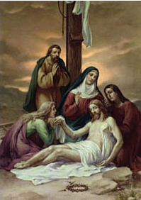

XIII. állomás: Jézust leveszik a keresztről és átadják édesanyjának

O quam tristis et afflicta / Fuit illa benedicta / Mater Unigeniti (Ó, mily nagy volt ama drága / Szűzanya szomorúsága / egyszülött szent Magzatán). Visszaadták anyja kezeibe Fia élettelen testét. Az evangéliumok nem beszélnek arról, amit ebben a pillanatban érzett. Mintha az evangélisták csöndjükkel akarták volna tiszteletben tartani fájdalmát, érzéseit, emlékeit. Mintha egyszerűen föltartóztatták volna azzal, hogy nem voltak képesek kifejezni. Csak a sokszázados áhítat őrizte meg a "Piéta" képmását, belevésve a keresztény nép emlékezetébe annak a szavakkal ki nem fejezhető szeretetkapcsolatnak a fájdalmát, amely az édesanya szívében fakadt az angyali üdvözlet napján, és amely érlelődött isteni Fia születésének várásában. Ez a szeretet nyilvánult meg a betlehemi barlangban, szenvedte első próbatételét már a templomi bemutatáskor, és elmélyült mindazokkal az eseményekkel, amelyeket megőrzött és átgondolt a szívében (vö. Lk 2,51). Most ennek a benső szeretetkapcsolatnak át kell alakulnia egy olyan egységgé, amely átível az élet és a halál határain. S így is lett, a századok hosszú vonulatán: az emberek megállnak Michelangelo Pietaja előtt; letérdelnek a Jótevő Mesta alakja előtt (Smetna Dobrodziejka) a ferences templomban, Krakkóban a Hétfájdalmú Szűzanya szobra előtt, Szlovákia Pártfogója előtt; és tisztelik a Fájdalmas Anyát a világ minden részén lévő szentélyekben. Így fogják fel azt a nehéz szeretetet, amely nem futamodik meg a szenvedéssel szemben, hanem bizalommal hagyatkozik rá Isten gyengéd szeretetére, akinél semmi sem lehetetlen (vö. Lk 1,37).
Salve Regina, mater misericordiae; vita, dulcedo et spes nostra, salve. Ad te clamamus... illos tuos misericordes oculos ad nos converte. Et Iesum, benedictum fructum ventris tui, nobis post hoc exilium ostende. (Üdvözlégy, Királyné, irgalmasság anyja, élet, édesség, reménység, áldunk... Két szemed áldott sugarát fordítsd ránk végre. És Jézust mutasd nékünk, méhed szent gyümölcsét, hogy őt e számkivetés után lássuk!)
Eszközöld ki számunkra a hit, a remény és a szeretet kegyelmét, hogy amint te, mi is az utolsó leheletünkig kitartsunk a kereszt alatt. A te Fiadnak, Jézusnak, a mi Üdvözítőnknek, az Atyával és a Szentlélekkel együtt minden tisztelet és dicsőség mindörökkön örökké. Amen.